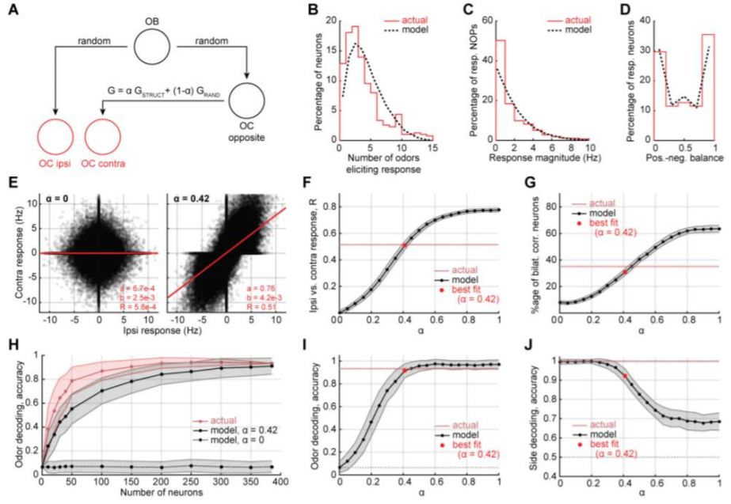
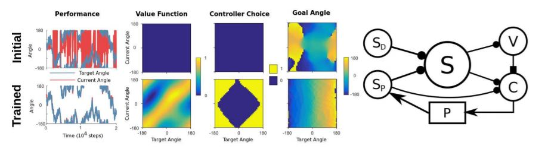

Have you ever wondered why we have two nostrils? Humans are mostly symmetric, especially when seen from the outside; so perhaps it might make sense to have two nostrils. But, there are many cases of asymmetry in the human body: we have one heart on the left side of our body, our lungs are lopsided, and we have only one mouth. Perhaps you could imagine a version of a human that had one large nostril in the middle of our face, why not?
Well, we can learn something from the example of our ears (of which we tend to have two). Our brains make use of the two independent sensors to calculate distances. By measuring the separation in time between a sound hitting first one then the other ear, the brain calculates the direction that the sound came from: for example, if the sound arrives at the left ear first it must have come from the left side. If you've ever seen your dog cock their head it is supposedly to improve this locating ability.
So, could the brain be doing something similar with two nostrils? By comparing between the two of them it might be able to locate the direction your dinner is coming from? Or perhaps the two nostrils serve some more exotic function?
In this study my colleagues measured the brain's response to smells when they arrived in either the left or the right nostril of some nice lab mice; perhaps by seeing how the brain responds to odours in each nostril we could begin to understand the function dual nostrils serve. We found that the brain's response to left and right nostrils were remarkably similar. This was particularly surprising given recent findings, which led us to conclude that some mechanism must ensure the response to left and right nostrils are the same. I built a model illustrating one potenital mechanism and showed that it agreed with the experimental data. This suggests that early in life the brain learns to to align the response to different nostrils: i.e. in very young children perhaps oranges do smell different depending on which nostril you use, but this difference disappears as you grow up!
So, no conclusive answer to why we have two nostrils, but our study added a piece to the ongoing puzzle!
Our research was motivated by two facts. First, a person’s two nostrils are independent measuring devices that do not share information with each other before reaching the cortex. Second, olfactory information is scrambled between the nose and the brain, with each olfactory cortical neuron connected to a random subset of those in the nose. Taken together, this means that each brain hemisphere is presented with a differently scrambled, seemingly inconsistent, window onto the olfactory environment. We therefore asked: ‘does the olfactory cortex align these two pictures? And if so, how?’
To answer these questions, our experimental collaborators in Professor Venkatesh Murthy’s group recorded neurons from the olfactory cortex of mice as odours were presented selectively to each nostril. From their recordings, we demonstrated that responses to odours from the left and right nostrils are highly correlated in each side of the brain. In contrast, I demonstrated that a random intercortical connection would lead to an uncorrelated representation, hence the connection must be somehow structured. Further, I built a computational model that illustrated how matched odour representations could readily arise from conventional Hebbian plasticity. The structured interhemispheric connectivity we unearthed demonstrates that the brain builds consistent internal representations, even when presented with seemingly inconsistent inputs
Read the paper here.
Figure 1: (A) Diagram of the model. (B) - (D) Show the model matches the distribution of responses observed in the data for (B) how many odours trigger each neuron, (C) how much the neurons are activated, and (D) the percentage of the time each neuron is activated rather than inhibited. (E) - (J) Make various comparisons between the model and the data as alpha is changed from 0, a random connection between the two olfactory cortices, to 1, a purely Hebbian structured connection. We can see that around alpha = 0.4 the data is best matched. In fact, it fits really well, given how simple the model is!
One reason for exploring this is certainly curiosity, in fact that might be the only reason, who doesn't want to know why we have two rather than one, three, or forty nostrils?!
But one form of the curiosity is particularly intriguing. Many recent in advancements in cutting-edge AI have come from incorporating aspects of visual neuroscience into artificial neural networks (creating convolutional neural nets - CNNs). But the visual system shows only one form of biological sensory processing, and a form of processing that is particularly tuned to the characteristics of visual stimuli (for example two neighbouring pixels in a random image have a high likelihood of being the same colour, CNNs make use of this). Our sense of smell has learned to process a completely different form of sensory data - odorants, mixtures of chemicals, and the number of potential chemicals is vast. This form of data is much harder to understand with a CNN, and shares some similarities with other 'high-dimensional datasets' like genetic data. Perhaps by understanding the tricks the nose uses to make sense of smells we can improve our artificial methods of understanding high-dimensional data.
When you reach to press a button most of the hard work of control is swept under the carpet. Rather than having to think 'contract left anterior deltoid, relax right bicep etc. etc.' you just think 'press the button.' In fact, even the process of reaching requires the careful control of tens of muscle but it seems effortless. This level of effortlessness far exceeds the current artificial equivalents. We tried to copy some of this effortless motor control in a very simple setup, using a controller that is able to apply (simulated) torques to a (simulated) pendulum.
Our controller had two levels, like two managers. The higher level manager set goals for the lower level manager to fufill, for example by saying 'get the pendulum to 90 degrees', but it didn't worry about how to get there. The lower level manager took the goal set by its boss and exerted torques in order to reach it. So the higher level manager is a bit like you thinking 'press the button', while the lower level manager is like your subconscious that performs the difficult task of choosing which muscles to contract to reach its goal.
We were able to adapt modern learning algorithms to this two leveled task, and we hope that future extensions of this scheme will prove useful in both improved artificial control as well as shedding light on how your body achieves the fine motor skills it is capable of - which could perhaps help in medical cases where patients lose motor control.
Our setup used bio-plausible reinforcement learning to learn both the goal angle (fourth column in the image below), and which controller to use in each region (third column). Hence, we show a level of hierarchical control in a non-monotonic setup, a possible starting point for future explorations of hierarchical reinforcement learning.
Read the paper here.
Figure 2: On the right, the actor-critic architecture that chose an angle to track to. On the left, a comparison of initial and final control. At the beginning the controller struggles: the red line does not track the blue, whereas by the end it is tracking closely. The three diagrams show the choices made by the controller, in this case an optimal policy that tracks from current to desired angle.
The behaviour of solids is determined by interactions between the elements that make them up; for example, if there are free electrons in a metal it will conduct electricity. But it is suprising how much of the behaviour is just a result of geometry: send a wave (for example sound) through a lattice of pillars and the way the sound bounces around will be similar in many respects to the way an electron bounces through a lattice of metal atoms.
There's been a class of materials that have caused much excitement recently: van der Waals materials. These are made from layers of atoms much like the two layer structure in Figure 3A below. It has recently been found that some of these materials are superconducting, meaning electrons can flow with zero resistance. There remain many mysteries around superconductivity which if solved may permit their use in everyday settings, for example in the national grid, avoiding the wasted energy that is turned into heat by the resistance of the wire.
In our intial paper we recreated some of the behaviour of these materials but by replacing the electrons bouncing around atoms with sound bouncing around pillars. This means rather than doing experiments at freezing temperatures with minature devices we can just fire sound through an array of iron pillars.
In a follow-on piece of work our team was able to recreate the key features of the superconducting metal within an acoustic system, which was super exciting to see!
Van der Waals heterostructures are an active frontier for discovering emergent phenomena in condensed matter systems. They are constructed by stacking elements of a large library of 2-dimensional materials that couple together through van der Waals interactions. However, the number of possible combinations within this library is staggering, so fully exploring their potential is a daunting task. We introduced van der Waals metamaterials to rapidly prototype and screen their quantum counterparts. These layered metamaterials are designed to reshape the flow of ultrasound to mimic electron motion. In particular, we show how to construct analogues of all stacking configurations of bilayer and trilayer graphene through the use of interlayer membranes that emulate van der Waals interactions. By changing the membrane’s density and thickness, we can also reach coupling regimes far beyond that of naturally occurring graphene. We anticipate that van der Waals metamaterials can be used to explore, extend, and inform future electronic devices. Furthermore, they allow the transfer of useful electronic behavior to acoustic systems, such as flat bands in magic-angle twisted bilayer graphene, which may aid the development of super-resolution ultrasound imagers
Read the original paper here.
This has since been extended to simulating the flat bands of twisted bilayer graphene in acoustics, see the paper here. (Or the version on arxiv)
Figure 3: (a) We recreated interlayer hopping in bilayer graphene using (b) two layers of honeycomb metamaterial separated by a flexible membrane. (c) In AB-stacked bilayer graphene, the Dirac cones hybridize to create a ‘kissing’ band structure. (d) With an interlayer membrane made of 0.19-mm thick HDPE, the same effect is seen in our bilayer metamaterial. This effect is well described by the same tight-binding Hamiltonian used to describe bilayer graphene (inset). (e) In AA-stacked bilayer graphene, the structure of the Dirac cone changes. (f) By stacking our metamaterial in the AA configuration, it accurately captures the AA graphene Dirac cone structure.